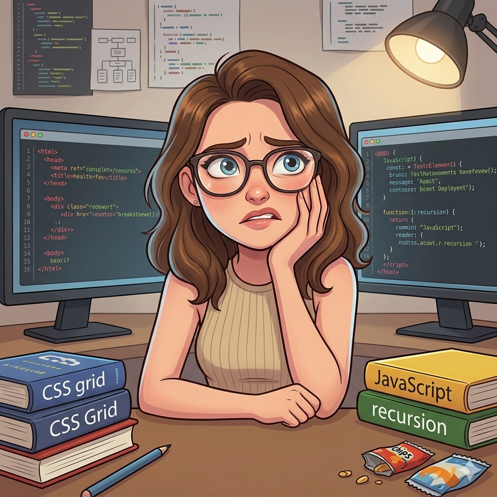
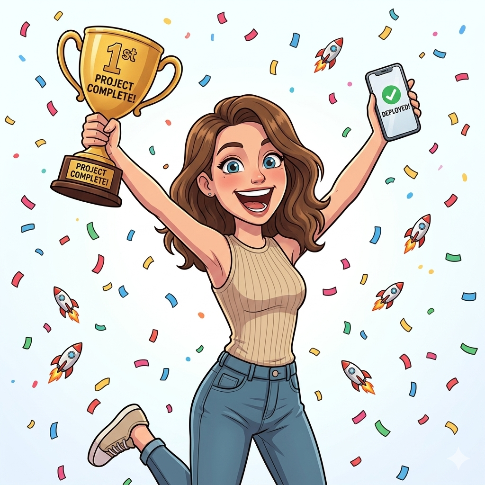
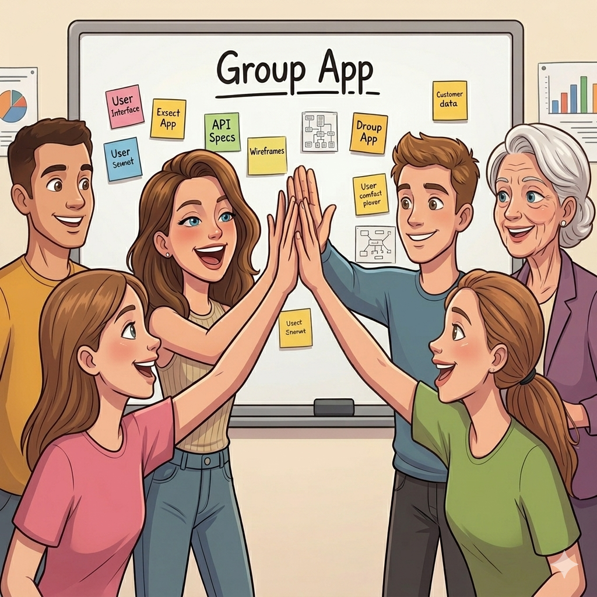
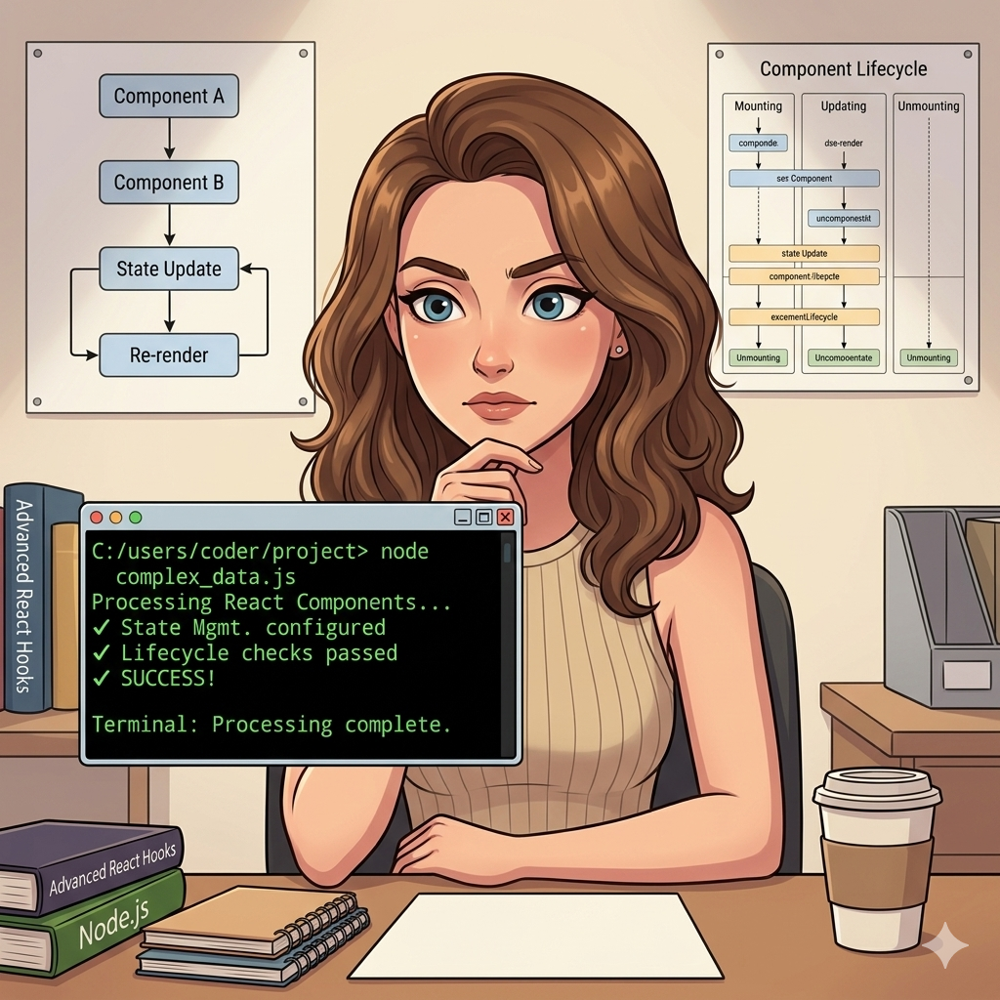
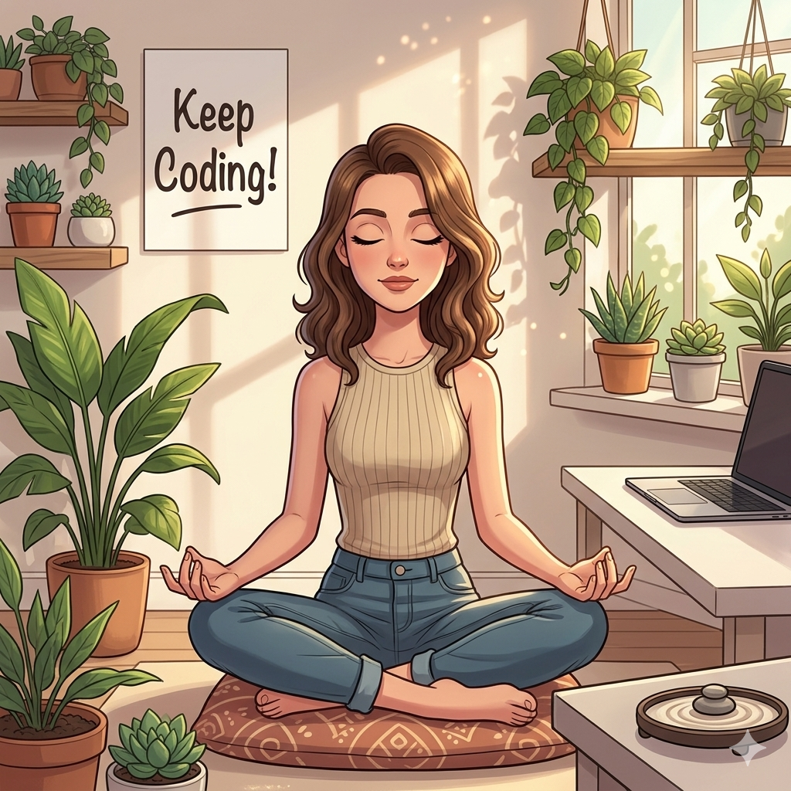
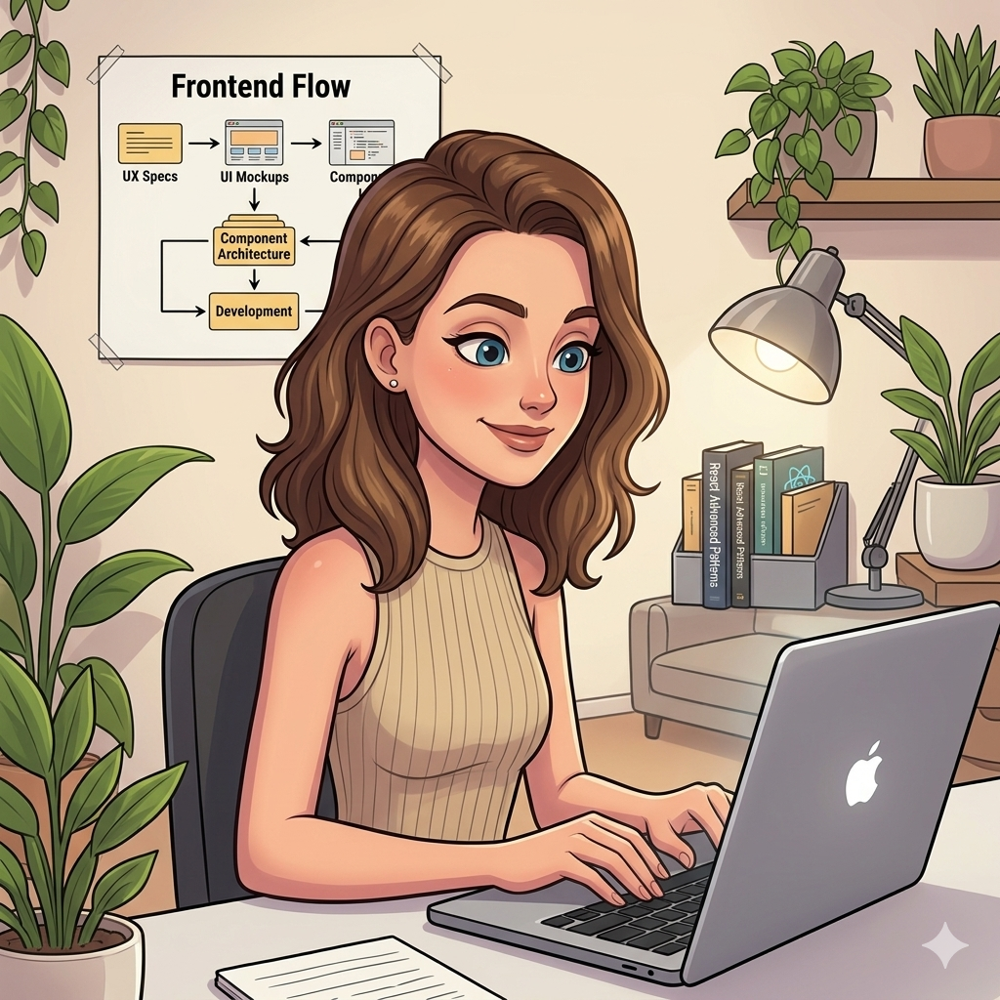

Это было самое начало пути. На этом этапе важно было проникнуться основами и настроиться на учёбу. И, возможно, подумать, как новые знания могут повлиять на ваше будущее.
Перед началом обучения было очень интересно проходить вводный модуль и наблюдать за своей реакцией - понравится или нет. После вводного модуля нахлынуло огромное желание учиться дальше, появилась мотивация и вдохновение на изучение новой для меня профессии.
1 спринт: Я — чистый лист

</HTML>
На первых этапах мы работали со страхами и сомнениями, которые часто испытывают новички. Один из них — страх перед чистым листом. Это, конечно же, намного сложнее, чем боязнь куска бумаги. Часто за этим ощущением скрываются более глубокие вопросы: с чего начать? а вдруг будет слишком сложно? что, если я не справлюсь?
Во время обучения на первом спринте часто не верилось, что когда-то я сама смогу создать сайт. Здесь были смешанные чувства - вроде бы и мотивация еще осталась, но и присутствовал страх от нового, местами непонятного, материала.
1 спринт: А если не получится?

</HTML>
Первый проект — позади! Но это всё ещё самое начало пути. Радость могла быстро померкнуть и смениться ожиданием провала. Или вы, наоборот, могли вдохновиться успехами и поверить в себя.
После сдачи первого проекта я очень собой гордилась! Мне так понравилось делать свой первый сайт, я радовалась каждому получившемуся блоку на будущем сайте! Здесь на меня нахлынуло еще большее вдохновение учиться дальше.
2 спринт: Погоня за идеалом
</HTML>
На этом этапе вы уже достаточно разбирались в основах вёрстки, чтобы понять, как много ещё впереди. Вы могли попытаться погнаться за идеалом и понять, что он недостижим. А, может, вы вовсе и не подвержены перфекционизму и вместо того, чтобы сделать идеально, старались просто сделать.
После удачной сдачи первого проекта я поняла, что у меня есть все шансы стать фронтенд-разработчиком, поэтому нужно серьезнее отнестись к обучению и уделять ему больше времени.
2 спринт: О тех, кто рядом

</HTML>
Всё это время вы были не одиноки (хотя, возможно, иногда и чувствовали, что одни против целого мира). Вас окружали одногруппники, команда сопровождения и просто близкие люди, которым можно пожаловаться, если очередной макет просто так не поддавался. Осваивать что-то новое легче, когда рядом есть единомышленники, не правда ли?
На нашем курсе есть очень отзывчивые помощники: наставник, куратор и старшие студенты. А также у нас общительные ребята-однокурсники, которые оперативно могут помочь с решением какой-либо проблемы!
3 спринт: Обходные стратегии

</HTML>
На этом курсе вы постоянно решали разные задачи. В какой-то момент вам могло показаться, что решения просто иссякли. Значит, пришло время посмотреть на задачу под другим углом.
Третий спринт показался для меня очень интересным: здесь появилась адаптивность к разным форматам экранов. Учиться было сложно, мотивация иногда пропадала, но я знаю, что у меня все равно все получится!
3 спринт: Когда опускаются руки

</HTML>
Во время учёбы часто возникает чувство, когда не знаешь, за что хвататься. Вроде и проектную пора сдавать, и задачи хочется порешать, и в теории получше разобраться, и жизнь не забыть пожить. В такие моменты очень нужна концентрация. Вспомните, откуда вы её черпали.
Во время учебы я действительно начала медитировать, следить за своим сном и больше внимания уделять своему внутреннему спокойствию. Хочется, чтобы в жизни везде был баланс, поэтому надо прислушиваться к своему состоянию и вовремя давать отдых организму.
«Сейчас я здесь»

</HTML>
Сейчас вы уже очень много знаете о вёрстке. Но это только начало. Во-первых, впереди ещё много материала про «красотищу». Во-вторых, с окончанием курса учёба не заканчивается. Вёрстка — это целый мир. И этот мир постоянно меняется. Познать его полностью не получится, но это тот случай, когда важен сам процесс познания. Ведь часто путь — и есть результат.
На последнем модуле верстки я задумываюсь о том, сколько нового я уже узнала за время обучения, сколько знаний поселилось в моей голове, но понимаю, что усвоила всего около 30-40% материала! Стараюсь сильно не расстраиваться из-за этого и продолжаю изучать материал в своем темпе. Верю, что все придет с опытом и повторением теории.